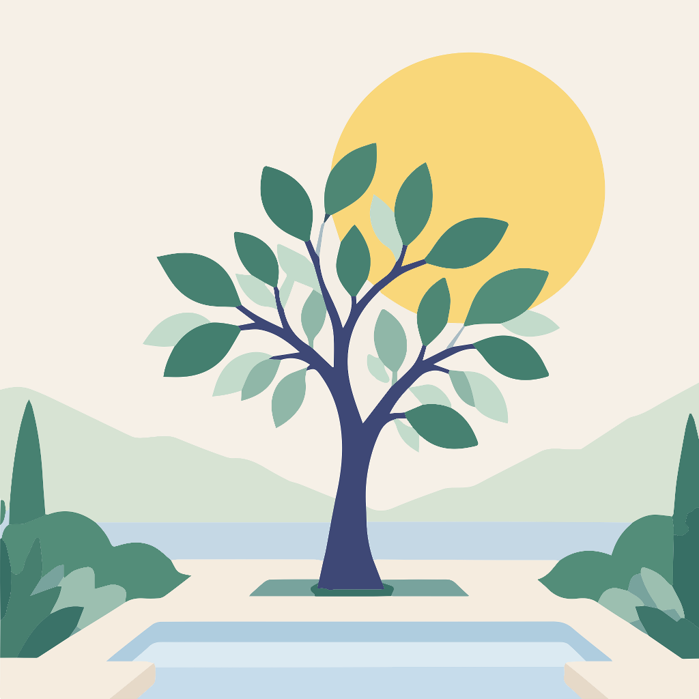

Privacy policy
In short
Without an account, everything stays on your phone: nothing is sent anywhere.
With an account (optional), we only keep your email address and your progress, to back it up and get it back on another phone. They are hosted in the European Union, in Sweden.
The app is free. Donations go through Apple’s App Store: we never see your bank details, your name or your Apple ID.
No ads, no selling of data, no tracking of what you do in the app.
Who is responsible for your data
Ma mémorisation is published by Insaf Aberkane, in Belgium, the controller of your data.
The data the app uses
Your progress: your surahs and their folders, the verses memorized, the cycle days, the review dates, the days spent with the Quran, the style of each tree and your settings.
Without an account, this information is stored only on your phone.
With an account, it is also stored in the cloud, with your email address. Each time you sign in, our host also keeps technical information (such as the IP address and the time of sign-in) to keep the service secure.
The app doesn’t ask for your name, your location, your contacts or your photos.
Why
Your email address is used only to send you the sign-in code and to recognize your account.
Your progress is used only to back it up and get it back on your devices.
This data is processed because you chose to create an account to use the cloud backup.
Donations
Donations are App Store in-app purchases. Payment is handled entirely by Apple, under its own privacy policy (apple.com/legal/privacy).
Apple only tells the app which donation was made and whether it is valid (the amount chosen, the date and a transaction number), so it can thank you.
Apple also sends us reports without your identity (for example the number of donations per country), for accounting.
A donation doesn’t unlock anything: the app is complete and free for everyone.
Who has access
No one but you can read your data from the app: the database refuses any access to another account’s data.
Two services help us run the account: Supabase, which hosts the database and the accounts in the European Union (in Stockholm, Sweden), and Brevo, which sends the email with your sign-in code.
Apple handles donation payments (see “Donations”).
Your data is never sold, rented or shared for advertising.
How long
Your data stays in the cloud as long as your account exists.
When you delete your account, your email address and your progress are erased from the database right away. Any technical backup copies kept by the host then disappear on their own.
The data stored on your phone stays there until you delete the app.
Your rights
You can view, correct, export or delete your data at any time.
Export: Settings → Backup to a file → Export.
Delete: Settings → Account → Delete my account.
For any other request, you can write to us. If you think your rights are not respected, you can also contact the data protection authority of your country: in Belgium, the Data Protection Authority (dataprotectionauthority.be); in France, the CNIL (cnil.fr).
Links to Instagram and Facebook
The “Follow us” buttons open our Instagram and Facebook pages outside the app. What you do there then depends on those services’ privacy policies: the app sends them nothing.
Security
Exchanges between the app and the cloud are encrypted. There is no password: you sign in with a temporary code sent by email.
Changes
If the app changes the way it uses your data, this page will be updated and the date below will change.
Write to us: mamemorisation@gmail.com
Last updated: October 28, 2026